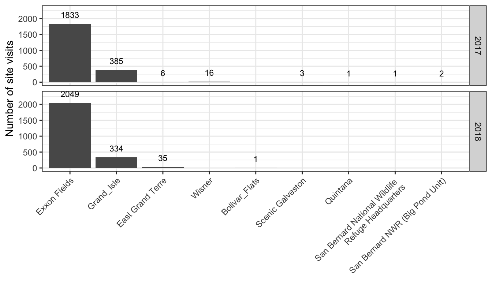

3 LETE Results
3.1 Study Area
Stations within the study region are presented below, grey stations had no detections, while red stations had at least one tag detected during the study period from 2017 to 2018. Triangles represent receivers that were active during 2017 and 2018, circles represent stations that were only active in 2017 (Quintana and East Grand Terre). The blue lines indicate the direction of antennas during the study period. All receivers maintained the same bearings throughout the study period with the exception of Bolivar_Flats, here the solid blue lines are the 2017 bearings, while the dashed blue lines are the 2018 bearings.
********ADD SCALE BARS TO ALL MAPS*******
 All LETE were tagged within close proximity to Exxon Fields, and for the purposes of this report stations considered within proximity to the breeding area are Exxon Fields, East Grand Terre, Grand_Isle, and Wisner. A close up of this area is below:
All LETE were tagged within close proximity to Exxon Fields, and for the purposes of this report stations considered within proximity to the breeding area are Exxon Fields, East Grand Terre, Grand_Isle, and Wisner. A close up of this area is below:

3.2 Detection Overview
In 2017, only 1 individual (motusTagID 23270) was detected at stations outside the immediate tagging region, all other individuals and the bulk of the detections occurred at Exxon Fields, East Grand Terre, Grand_Isle, and Wisner. The map below shows the detection pattern of all 2017 tagged birds, lines are coloured by tag ID. 
The plot below is the same 2017 data as mapped above, each plot is one individual’s detections during incubation plotted as time by longitude, points are coloured by detection site. Note that x and y scales vary between plots.

In 2018, again only one individual was detected outside the immediate tagging region, all other individuals and the bulk of the detections occurred at Exxon Fields, East Grand Terre, Grand_Isle. Note that in 2018 no birds were detected at Wisner, despite close proximity to nesting areas. Based on receiver performance outputs, this is likely due to receiver issues rather than a true lack of detections. The map below shows the detection pattern of all 2018 tagged birds, lines are coloured by tag ID. 
The plot below is the same 2018 data as mapped above, each plot is one individual’s detections during incubation plotted as time by longitude, points are coloured by detection site. Note that x and y scales vary between plots. 
3.3 Foraging vs Incubating

The above plot is a selection of 4 representative detection patterns of individuals; examining the signal strength it is not always clear when birds are attending the nest site and when they are foraging. For example, tag 23219 shows clear daily signal strength patterns, with low signal strength occuring overnight when the bird is likely incubating. Tag 23218 has a similar but less distinct pattern, some nights the bird is detected while other nights it is not. In other cases the tag is picked up far less consistently as in tag 28593, and in even more extreme cases as in tag 28522. For these final two tags, the bird is rarely if ever detected while at the nest site, and most detections likely occur as the bird is leaving or arriving at the nest site.
Furthermore, even tags with clear daily detection patterns as in tag 23219, shorter nest site attendance periods during the day are not as obviously picked up. However, based on these detections, the signal strength during incubation is generally much lower than during flight. This is to be expected as a tags detection range increases substantially when a bird is in the air as compared to on the ground. Therefore, all detections on the Exxon Fields receiver with a signal strength < 80 will be excluded from foraging analysis from this point onwards to exclude likely detections on the nest. While this will invariably also remove detections on Exxon Fields that may occur when the bird is in flight, since the station is in very close proximity to the nesting site, in most cases this will only remove the tail ends of a detection streak as the bird is departing or approaching the nesting site.
3.4 Heavily Frequented Foraging Areas
Detections were split into discrete site visits, a site visit was categorized as a set of consecutive detections of a single tag at a single station. To account for short periods of no detections within an otherwise continuous site visit, discrete site visits that were <10 minutes apart were lumped together to form a single site visit.
To add meaning to detection sites, the distance from Exxon Fields was calculated for each station where tags were detected and are presented below. A full database with distances calculated between all stations can be found in Appendix A.
| Site Name | Distance from Exxon Fields (m) |
|---|---|
| Exxon Fields | 0 |
| Grand_Isle | 3166 |
| East Grand Terre | 12631 |
| Wisner | 23072 |
| Rock W | 281671 |
| Sabine NWR | 339660 |
| High_Island | 430034 |
| Bolivar_Flats | 464126 |
| Scenic Galveston | 480286 |
| Brazoria National Wildlife Refuge | 516442 |
| Quintana | 520551 |
| San Bernard National Wildlife Refuge Headquarters | 546935 |
| San Bernard NWR (Big Pond Unit) | 569092 |
| Rockport Bay Education Center | 704653 |
For each station the number of total number of visits was calculated, as expected Exxon Fields had by far the highest number of visits as it was at the nesting area. In 2017 and 2018 Grand_Isle had the next highest frequency of detections, this is not surprising as it is the closest station to the nesting area. East Grand Terre and Wisner followed with lower numbers of site visits and are also near the nesting area. Note the lack of detections at Wisner in 2018, this is likely due to receiver malfunction rather than a true lack of detections. All other stations had negligible (<3) visits and are substantially farther away from the nesting grounds. 
The length of visits was consistant with the number of visits, that is, birds generally had longer detection periods at Exxon Fields, followed by East Grand Terre, Grand_Isle, and Wisner, only Grand_Isle and Exxon Fields differed significantly in their visit length. The figure below shows the length of time each bird was detected at each site during each site visit, note that the plot has been cut off due to a high number of outliers, Exxon Fields had a maximum visit length of 61 minutes, Grand_Isle 107 minutes, East Grand Terre 19 minutes, Wisner 27 minutes (See Appendix B for complete visit information). 
Of the birds that were detected at Exxon Fields in 2017 and 2018, all were detected on at least 6 different visits. At Grand_Isle, the majority (39/44, 88.6%) of birds were detected on more than 2 separate occasions (>2 discrete visits). In comparison, at the remaining stations less than half (10/23, 43.5%) were detected on more than two occasions. Only tags 23261 appeared semi-regularly at wisner but is notable in 12 detections.
Thus birds appear to spend the majority of their time in close proximity to Exxon Fields, however this could be a by-product of increased detection due to proximity to nesting sites and therefore a necessity to frequently pass the receiver regardless if foraging is occuring nearby or not. Most birds frequented Grand_Isle regularly which could be due to nearby foraging, or a proximity to the nesting site. See Appendix ?? for detection plots of all birds detected more than twice on stations outside of Exxon Fields and Grand_Isle.
*******NEED TO ADD THIS APPENDIX*******
3.4.1 Simultaneous Detections
If stations are within close proximity of one another, it’s possible to get simultaneous detections on both stations at once. During incubation there were 161 pairs of simultaneous detections, 2 of these occurred between East Grand Terre and Exxon Fields, 3 between East Grand Terre and Grand Isle, and the other 156 between Exxon Fields and Grand Isle. Exxon Fields and Grand Isle are the closest two stations at 3.1 km apart, easily within range of each other particularly when birds are in flight (see Appendix A). East Grand Terre is 12.6 km and 15.8 km away from Exxon Fields and Grand Isle respectively, the next closest pairs of stations.
3.4.2 Detection Directions
We can narrow down the areas visited beyond which site they were detected at by examining which antenna they were detected on. The figures below show the total number of detections for each antenna bearing at each site for 2017 and 2018. Orange lines are the antenna bearings at each site, the blue bars are coloured by the number of detections on each antenna throughout the incubation period - note that scales differ by site.
Detection patterns are similar at Exxon Fields, Grand Isle, and East Grand Terre in 2017 and 2018. Detections at Exxon Fields were predominantly to the SW, directly in line with the tagging area, this also indicates that birds likely arrive and depart to/from the nesting location from the SW. Grand Isle detections were overwhealmingly more prevalent to the NE, pointing towards the nearby colony, while this may indicate that birds don’t spend much time foraging to the SW, it could also be due to the sheer proximity of the nesting site. As discussed earlier, nearly all cases of simultaneous detections between two stations occur between Exxon Fields and Grand Isle, suggesting that many of the arrival and departure flights from the colony could be captured by both stations, resulting in the high number of NE detections at Grand Isle being an artifact of colony attendance. East Grand Terre had the most detections by far to the SW, again towards the colony.
In 2017, birds were picked up in very small numbers outside of the immediate breeding area. It is difficult to make generalized assumptions from such a small number of detections, however it does seem as though a few birds may be using the areas off the coast around Quintana. There are even fewer detections away from the colony during incubation in 2018, but those that do occur are in the same region.
3.5 Mean Distances Travelled for Foraging
Based on detection data, in 2017 the mean distance travelled for all detection periods was 2.5km, with a maximum distance travelled to San Bernard NWR (Big Pond Unit) at 569.1 km. In 2018 the mean distance travelled was 0.86 km, with a maximum distance travelled of 464.1 km to Bolivar Flats. However, the vast majority of detections (4,366/4,374 or 99.8%) during foraging trips occurred within 23.1 km from the colony detected at the four closest receiver stations (Exxon Fields, Grand Isle, East Grand Terre, and Wisner).